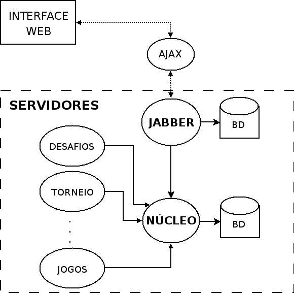
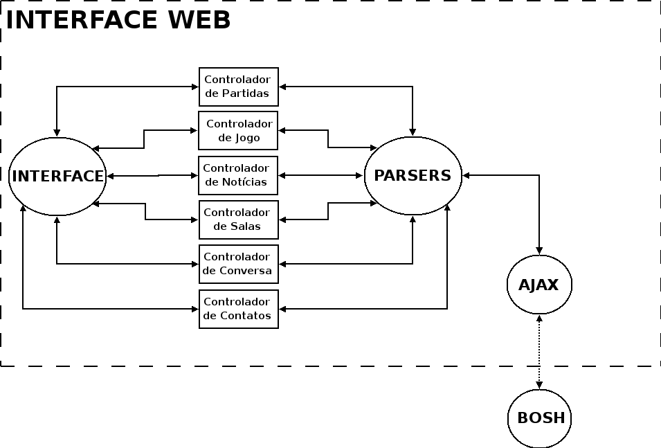
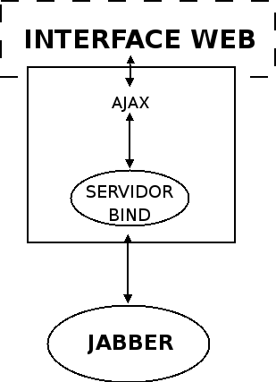

Interface WEB para Xadrez - Teste
Equipe de Implementação da interface Web - C3SL 2007
Última atualização - Tue Jun 3 10:56:44 2008
1. Introdução
Esta página contém a documentação, explicações e esquemas que demonstram o que foi usado na implementação da interface Web para o projeto de Xadrez.
Houve reuniões e discussões sobre como montar uma arquitetura geral para interagir com a interface e será dado uma explicação breve sobre a arquitetura geral de como tudo está interligado. Após essa apresentação será explicado o que cada componente da arquitetura faz.
Por ultimo será explicado, tentando detalhar o máximo possível, a interface. Explicações de como foi implementado, os algoritmos, estrutura de dados, a organização dos diretórios, a arquitetura por trás de toda interface, os componentes dessa arquitetura, etc.
2. Arquitetura Geral
Nesse tópico será apresentado a arquitetura geral que foi escolhido para fazer a organização toda do Projeto de Xadrez - C3SL 2007.

2.1. Servidor Jabber
Para facilitar a comunicação entre usuários da interface usamos o protocolo Jabber (baseado em XMPP, implementado pelo eJabberd) para troca de mensagens. Como pode ser observado no diagrama acima, utilizamos AJAX para as trocas de mensagens XMPP entre a interface e o servidor Jabber.
2.2. BOSH
É a sigla para Bidirectional-streams Over Synchronous HTTP. O AJAX não consegue falar diretamente como servidor Jabber. Logo, o bosh é um intermediário, que entrega as mensagens da interface para o Jabber.
2.3. Servidor de Xadrez
Este servidor foi dividido em diferentes componentes:
- Desafios: Controla os desafios feitos pelos jogadores.
- Torneio: Gerencia os torneios no servidor.
- Jogos: Após os desafios serem resolvidos este componente controla tudo relacionado ao jogo.
A comunicação entre a interface e o servidor também é baseada em troca de mensagens XMPP, e todas elas passam pelo servidor Jabber, que as redirecionam para a interface/servidor xadrez.
3. Interface Web
A Interface Web é a parte que interage com o usuário. É uma página baseada em requisitos levatados e design elaborados para usuários iniciantes com o objetivo de ensinar a jogar xadrez.
A implementação foi feita utilizado a linguagem web Javascript. Como já tido anteriormente, a comunicação com as demais entidades é feito usando AJAX. Para mostrar os dados no navegador de forma elegante e amigável foi utilizado estilos CSS.
3.1. Arquitetura da Interface
A arquitetura da interface foi divido entre a interface propriamente dita, controladores, parser e o BOSH.

- Interface: Responsável por mostrar na tela, de forma amigável, todas as saídas do sistema e coletar as entradas de dados.
- Controladores: Servem como intemediário entre a interface e o parser (de jogos, notícias, torneio, conversa e etc). Eles recebem os dados dos servidores, organizam nas estruturas de dados, interna de cada controlador, e, caso necessário, mostram na interface as atualizações. Os seguintes controladores são usados:
- Jogo
- Desafio
- Conversa
- Salas
- Convites
- Contatos
- Notícias
- Parser: Recebe as mensagens do BOSH, identifica qual é o tipo de mensagem e redireciona para o controlador correto. Por exemplo: uma mensagem de chat é enviado ao controlador de conversa. Um convite para adicionar usuário é redirecionado para o controlador de contatos.
- BOSH: Faz a comunicação entre a página Web com a rede Jabber, que encaminha os pedidos e informações para os servidores finais.
OBS: Não confundir Interface WEB com interface. A Interface WEB é toda a estrutura organizada para receber os dados do Jabber e mostrar no navegador. A interface é a parte responsável por mostrar os dados dentro da interface WEB.
3.2. Diretórios e Arquivos
A partir do diretório raíz, a estrutura de diretórios e arquivos fica da seguinte forma:
- css
- doc
- Contém os arquivos fontes deste material
- images
- Contém imagens utilizados na interface web
- scripts
- chat
- connection
- contact
- contact.js
- info.js
- invite.js
- search.js
- status.js
- data
- conf.xml
- consts.js
- data.js
- lang.xml
- game
- challenge.js
- game.js
- oldgame.js
- interface
- challenge.js
- chat.js
- contact.js
- game.js
- interface.js
- left.js
- load.js
- login.js
- oldgame.js
- profile.js
- room.js
- top.js
- welcome.js
- window.js
- lang
- en_US.xml
- pt_BR.xml
- zh_CN.xml
- login
- oldgame
- parser
- parser_chat.js
- parser_iq.js
- parser.js
- parser_presence.js
- profile
- register
- room
- utils
- dragpiece.js
- dragwindow.js
- images.js
- preloader.js
- utils.js
- window
- xmpp_messages
- index.html
- register.html
- css
-
Contém todos os arquivos de estilos usados na interface
- images
-
Contém todos os arquivos de imagens usados na interface. Bordas dos divs, imagens de status dos jogadores, peças e casas do tabuleiro, imagens dos botões, etc.
- scripts
-
Contém todos os scripts usados na implementação da interface. Todos os códigos de conexão, parsers, controladores e códigos para mostrar os dados na página web estão localizados nesse diretório. Para uma melhor organização, o diretório foi divido em sub-diretórios.
- doc
-
Contém toda a documentação em feito em txt2tags, convertido para html.
A descrição das funções nos arquivos pode ser encontrada em ...
4. Conexão
Para obter acesso a todas as funcionalidades, uma conexão é feita com o servidor Jabber e em seguida uma presença é mandada para o servidor de xadrez.
Como já foi descrito, a página se comunica com o servidor Jabber através de um servidor intermediário, BOSH.
A conexão com o servidor Jabber é feita de acordo com a especificação do protocolo XMPP, descrita em RFC3920.
As funções utilizadas para a conexão, com Jabber e o servidor de xadrez, estão em scripts/connection/connection.js.

5. Estrutura de dados
A solução escolhida para manter todos os dados necessários foi uma estrutura de dados global, DATA. Ao carregar a interface ela é inicializada com constantes lidas do arquivo de configuração (em /scripts/data/consts.js) e também aloca todos os objetos usados para guardar os dados.
5.1. Atributos da estrutura
Alguns dos atributos listados abaixos são também listas de objetos, contendo outros atributos.
- Data.UserList Lista dos contatos do usuário
- Data.UserList[].Username Nome do contato
- Data.UserList[].Photo Foto do contato
- Data.UserList[].Status Status do contato
- Data.UserList[].Subs Subscription do contato (usado para controle do convite)
- Data.UserList[].Type Tipo do contato
- Data.UserList[].Rating Objeto contendo o rating em todas as categorias
- Data.ChatList Lista de conversas abertas
- Data.ChatList[].Username Nome do outro participante da conversa
- Data.ChatList[].Status Status do outro participante
- Data.ChatList[].State Define se o chat esta visível ou minimizado
- Data.RoomList Lista de salas que o usuário esta conectado
- Data.RoomList[].UserList Lista de usuários conectados na sala
- Data.RoomList[].MsgTo Para onde a mensagem deverá ser enviada
- Data.RoomList[].Role A posição administrativa temporária do usuário na sala
- Data.RoomList[].Affiliation A posição administrativa do usuário na sala
- Data.RoomList[].OrderBy Como os usuários são ordenados
- '0' - Ordem alfabetica crescente
- '1' - Ordem alfabetica decrescente
- '2' - Por rating (escolhido previamente) decrescente
- Data.RoomList[].Room Objeto de sala, guarda os elementos da interface
- Data.ChallengeList Lista dos desafios recebidos e enviados
- Data.ChallengeList[].Username Nome do usuário desafiante ou desafiado
- Data.ChallengeList[].Id Identificador do desafio
- Data.ChallengeList[].Challenger Nome do usuário que fez o desafio
- Data.GameList Lista de jogos
- Data.GameList[].Id Identificador da partida
- Data.GameList[].YourColor Cor do usuário na partida
- Data.GameList[].BoardColor Cor do tabuleiro
- Data.GameList[].PW Jogador das peças brancas
- Data.GameList[].PB Jogador das peças pretas
- Data.GameList[].WPhoto Foto do jogador das peças brancas
- Data.GameList[].BPhoto Foto do jogador das peças pretas
- Data.GameList[].Game Div do jogo
- Data.GameList[].Finished Guarda se o jogo ainda esta em andamento
- Data.GameList[].CurrentMove Última jogada realizada
- Data.GameList[].Moves Lista de movimentos já feitos na partida
- Data.GameList[].Moves.Board Estado do tabuleiro antes do movimento
- Data.GameList[].Moves.Move Estado final do tabuleiro após a jogada
- Data.GameList[].Moves.ShortMove Apenas a jogada realizada
- Data.GameList[].Moves.PWTime Tempo das peças brancas
- Data.GameList[].Moves.PBTime Tempo das peças pretas
- Data.GameList[].Moves.Turn De quem foi a jogada
- Data.GameList[].SetTurn De quem é a vez de jogar
- Data.GameList[].AddMove Método para adicionar um movimento
- Data.OldGameList Lista de jogos antigos
- Data.OldGameList[].Id Identificador da partida
- Data.OldGameList[].YourColor Cor do usuário na partida
- Data.OldGameList[].BoardColor Cor do tabuleiro
- Data.OldGameList[].Moves Lista de movimentos já feitos na partida
- Data.OldGameList[].Moves.Board Estado do tabuleiro antes do movimento
- Data.OldGameList[].Moves.Move Estado final do tabuleiro após a jogada
- Data.OldGameList[].Moves.ShortMove Apenas a jogada realizada
- Data.OldGameList[].Moves.PWTime Tempo das peças brancas
- Data.OldGameList[].Moves.PBTime Tempo das peças pretas
- Data.OldGameList[].Moves.Turn De quem foi a jogada
- Data.OldGameList[].PW Jogador das peças brancas
- Data.OldGameList[].PB Jogador das peças pretas
- Data.OldGameList[].WPhoto Foto do jogador das peças brancas
- Data.OldGameList[].BPhoto Foto do jogador das peças pretas
- Data.OldGameList[].Finished Guarda se o jogo ainda esta em andamento
- Data.OldGameList[].CurrentMove Última jogada realizada
- Data.OldGameList[].SetTurn De quem é a vez de jogar
- Data.OldGameList[].AddMove Método para adicionar um movimento
- Data.SearchGameInfoList Lista com o resultado de uma busca de jogos
- Data.SearchGameInfoList[].Id Identificação da busca
- Data.SearchGameInfoList[].NGames Números de jogos encontrados
- Data.SearchGameInfoList[].Offset ////
- Data.SearchGameInfoList[].P1 Nome do jogador buscado
- Data.SearchGameInfoList[].P2 Nome do adversário
- Data.SearchGameInfoList[].Color Cor do jogador buscado
- Data.SearchGameInfoList[].From ////
- Data.SearchGameInfoList[].To ////
- Data.SearchGameInfoList[].More ////
- Data.SearchGameInfoList[].Elements ////
- Data.Windows Objeto com as janelas mostradas na interface
- Data.Windows[].Focus Aponta para a janela com foco no momento
- Data.Windows[].WindowList Lista de janelas na interface
6. Servidores
Aqui será apresentado os servidores, como eles fazem a comunicação com os servidores e os protocolos.
6.1. Servidor Jabber
6.2. Servidor de Xadrez
6.3. Servidor de Notícias